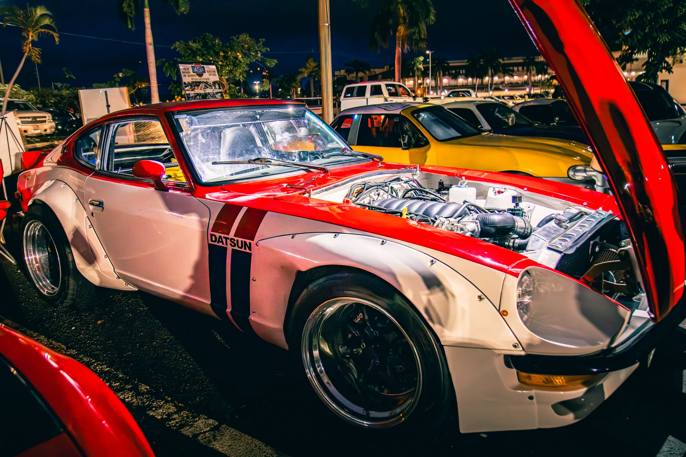

← All galleries
Cars & Culture
Custom builds, nighttime lights, and the people who make car culture come alive. Photographed at the Drifter Hawaiʻi gathering in October 2026.
16 selected photographs
← Back to portfolio
Classic lines after dark1 / 16
© Stacey Noelani Spirz · For viewing only. Want to use a photograph or order a print? Please contact me.
Swipe the photographs sideways or use the arrows. Tap the large image to see it full screen.
Keep exploring